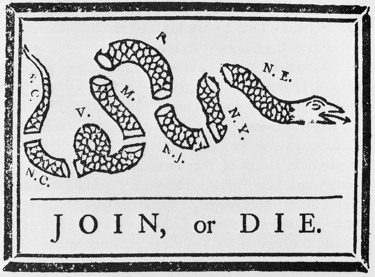
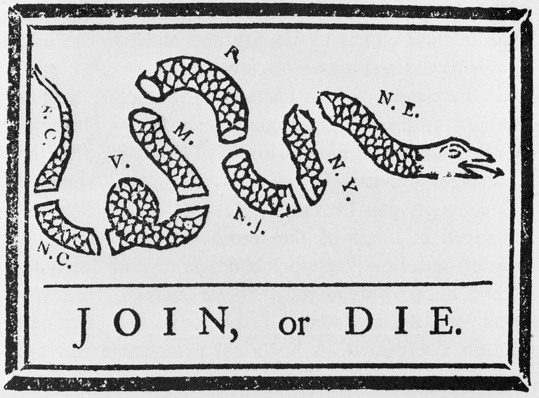
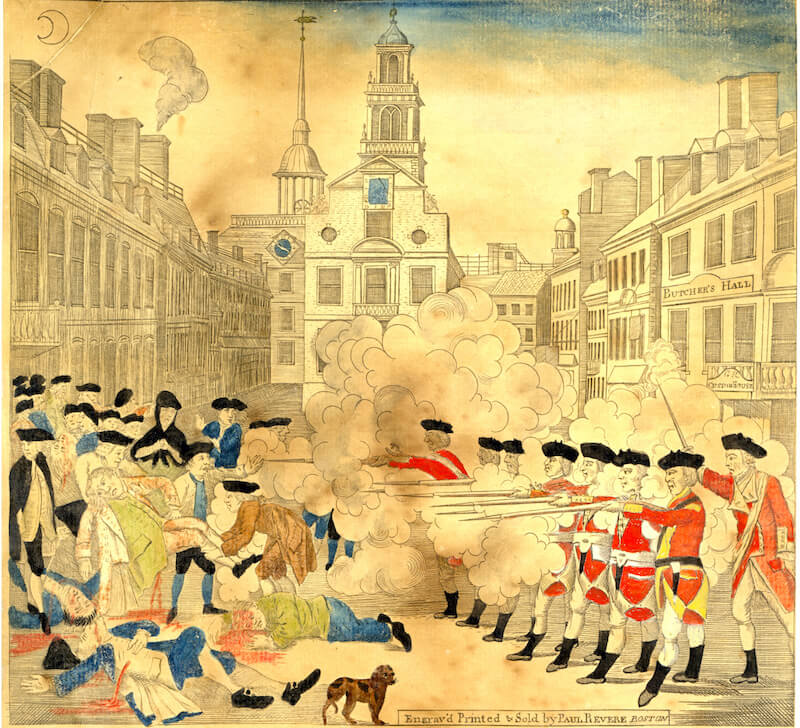

Albany Plan
The Albany Plan was created in 1754, as a means to create a unified government for the Thirteen Colonies
The Albany Plan was created in 1754, as a means to create a unified government for the Thirteen Colonies
The Stamp Act was passed on March 22, 1765. This tax required all american colonists to pay tax on every piece of printed paper they used.
The Boston Tea Party was on December 16, 1773. It was a political protest by the Sons of Liberty in Boston, Massachusetts
The Boston Massacre was an incident on March 5, 1770, in which British Army soldiers shot and killed several people while under attack by a mob.
The First Continental Congress was a meeting of delegates, from September 5 to October 26, 1774. It was called in response to the Intolerable Acts passed by the British Parliament.

The Second Continental Congress was a convention of delegates, that started meeting in the spring of 1775. It moved incrementally towards independence, adopting the Declaration of Independence. The Congress acted as the de facto national government of what became the United States by raising armies, directing strategy, appointing diplomats, and making formal treaties such as the Olive Branch Petition.